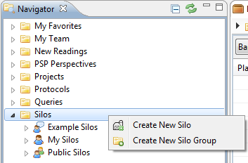
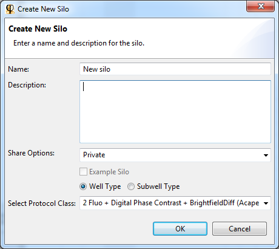
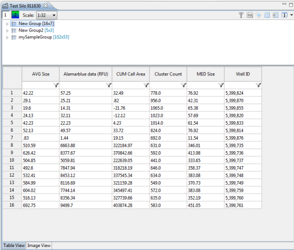
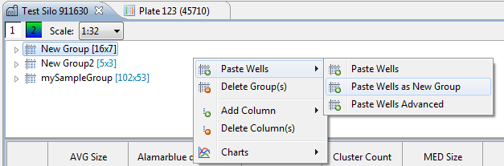
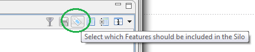
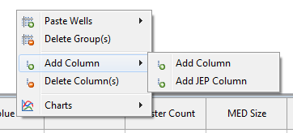
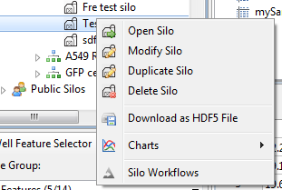

A silo is a container for data that you can assemble and manage yourself. Phaedra offers two types of silos:
- Well silos
- Subwell silos
You can create a new silo at any time, using any data you have access to. Silos can be created for various purposes:
- Assemble a training set for a machine-learning workflow
- Collect different types of outlier wells for QC
- Collect representative wells or cells for use in charts or presentations
- Etc.
A silo is saved on the Phaedra server. This means you can access it from any location or computer, if you are logged in to Phaedra. You can also share your silos with other users, for viewing only or with full access.
Creating a new silo
To create a new silo, go to the Navigator, right-click on the Silos item and select Create New Silo.

In the silo creation dialog, you can provide a name, a description, and several other settings:

Click Ok to create the silo. You will find the new silo in the Navigator, under Silos > My Silos.
Viewing a silo
You can open a silo by double-clicking on it in the Navigator. Doing so will open a silo view, containing two panels.
- The upper panel shows the groups that are contained in the silo.
- The lower panel shows the contents of the selected group. At the bottom are two tabs to switch between a table presentation and an image presentation.

A group is represented as a two-dimensional table. The rows represent the wells or cells (depending on the silo type). The columns represent the features.
In addition to features, columns can also be used to display other information, such as images or a custom calculation formula.
Adding data to a silo
Data is added to a silo using the copy & paste mechanism.
First, select the data to add. This could be anywhere, for example on a heatmap, in a chart or in a query result table. Right-click on the items and select Copy > Copy Items.

Then, open the silo, right-click inside the group panel and select an appropriate paste action.
For example, to paste a selection of wells in a new group, select Paste Wells > Paste Wells as New Group.

Initially, the new group will contain just one column: the Well ID. To add more columns, click on the Feature Selection button.

In the Feature Selection dialog, you can select the features that should be added to the group's columns.
Besides features, you can add custom columns as well. To do this, right-click inside the group panel, and select Add Column.

You can add two types of columns:
- Regular column: here you can provide the column's data manually, by double-clicking on a cell in the table and entering a value.
- JEP column: here you can provide a calculation formula, which will be evaluated for each row in the table.
When you are done adding data, click on the Save button to save the changes to the silo.
Managing silos
To manage a silo, right-click on it in the Navigator.

To change the silo's name or sharing options, select Modify Silo. To create a copy of the silo, select Duplicate Silo. To delete the silo, select Delete Silo.
These actions only work on silos you own, or silos that have been shared with you with modification permissions.